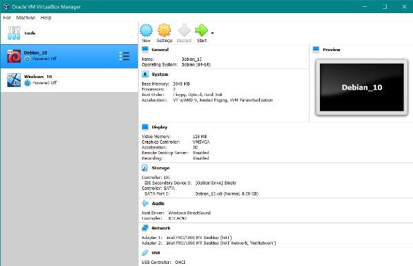

Growth
Adapting to Virtual School experience...
These past couple years have had everyone needing to adapt to new situations. This year, I needed to adapt going from a workplace setting back to a classroom setting, although a little bit different since the last time I was in school. It has been almost 5 years since I last attended a class and it was exciting for me to take on a new challenge. Learning new content from entirely online resources is quite difficult, as it is easy to get distracted being physically in a home setting.
Lessons Learned...
The "Lessons Learned" project provided useful insight on our future as BIT students. Raj and Sahil showed us many ways they improved in their IT careers in their presentation. One of the main points they discussed was their lack of confidence in their first year of classes. This had a couple different aspects to it since it applied in our programming skills as well as our social skills. They stressed the importance of stepping out of your comfort zone to speak to others as it will be beneficial to us as students to interact with each other. Meeting new people and discussing ideas and experiences with them will prepare us for future challenges that we might face. As we meet new people, our social skills will gradually improve and will likely create a lifelong network of friends and colleagues. Confidence improves as time goes on, and as a result, we will see our doubts about our programming skills disappear. The more we learn and familiarize ourselves with the programs we use in our classes, the more comfortable we will become.
Presenting a Local IT Company
Normally I am shy and nervous when public speaking, so this project was a challenge to practice for. Luckily, I gained the skills needed to present the CRA as a potential IT employer exceptionally well. I was quite happy with my result as I was able to slow my pace down and be comfortable speaking on the subject. I kept reminding myself that I have nothing to worry about and there is no reason to be anxious. I drove myself to improve and make my presentation as interesting as I could make it. I received feedback that boosted my confidence in myself and now see presentations as a new strength.
New Skills
Being aware of my strengths...
This skill statements assignment proved to be a great exercise to learn a lot about myself and the skills I currently have. It allowed me to search myself and brainstorm previous experiences to find out what I have gained up to this point in my life. It took a lot of self-awareness to identify the different skills that I was able to demonstrate over the years. I believe this to be one of the more important assignments in my career, since I can directly apply it within my resume. I hope to expand on this list as I go through the BIT program and am looking forward to experiencing the new challenges that lie ahead of me.
How can I help you today?...
My experience as a call center agent for the Canada Revenue Agency was one of my biggest experiences of growth. Right before I started as a student in the BIT program, I was taking calls and handling the difficult conversations and questions from taxpayers. This proved to be challenging for me as I am normally shy and reserved, and will not speak unless I am spoken to. I struggled at first, being too nervous to form proper sentences and often stuttering. But as time went on, I developed the communication skills necessary to convey the message I was trying to send. I was able to work my way around difficult conversations, and avoid conflict, while providing the information the taxpayer called for. I believe this sparked rapid growth in me as I needed to adapt and learn quickly on the job in order to perform and meet expectations.
Programs and Systems
We are experiencing technical difficulties...
This is a screenshot of my Virtual Machines that I had a lot of difficulty with over the term. The initial setup of the VM was easy, but as we added more and more features to the Windows and Debian VMs it became more and more of a challenge. I was one of 2 students having trouble setting up a private network in VirtualBox and it proved to be a very frustrating experience trying to get things to work. I spent several hours trying to troubleshoot and figure out what the issue was, checking if I had programs on my laptop preventing me from setting up the network. After meeting with the instructor a few times to try to find a solution, we settled on a compromise. This proved to be a challenge because the assignment instructions were made step-by-step for a system that was capable of setting up a private network. I had to figure a lot of things on my own and had to stay resilient and persistent in order to get everything working properly. In the end, I was not able to get my system to work the way it was supposed to, but I was still able to demonstrate the skill of setting up a private network with what I had.
Checking for errors...
This item is the 6th assignment in my programming class that proved to be a significant hurdle for myself and my peers. Among my classmates, this assignment was well known to be one of the most difficult as it challenged the student to make use of Arrays and ArrayLists. As an individual assignment, I was having a difficult time figuring out the requirements of the program I needed to create. Compared to previous assignments, this one was worded in a way that did not provide you with specific directions, rather concepts you needed to demonstrate. It was frustrating having to brainstorm ways around the different error codes I encountered, so I needed to be persistent and creative in my solutions. In the end, I was able to fully demonstrate my use of arrays and arraylists, however, I did receive input from my instructor on ways to improve my code. He told me that I understood the concept and demonstrated it well, but could have been more efficient in my methods. I was happy with my feedback because my instructor explicitly said that I demonstrated an understanding of the concept that a lot of my classmates were struggling with.
Looking back from the finish line...
This item is the 7th assignment from my programming class. The final program that we needed to create for the term was one that required students to demonstrate Polymorphism, Superclasses, and Subclasses. After the most challenging assignment of the term, this one showed me how far I have come as a programmer. I struggled a lot in the previous assignment, so it was relieving when I realized how easy this assignment was going to be. It still took quite some time to create the code, but I understood what I was doing and only had errors that were simple to resolve. This assignment has not been graded at the time of me writing this, but I am confident that I have understood and demonstrated the concept of Polymorphism, Superclasses, and Subclasses perfectly.